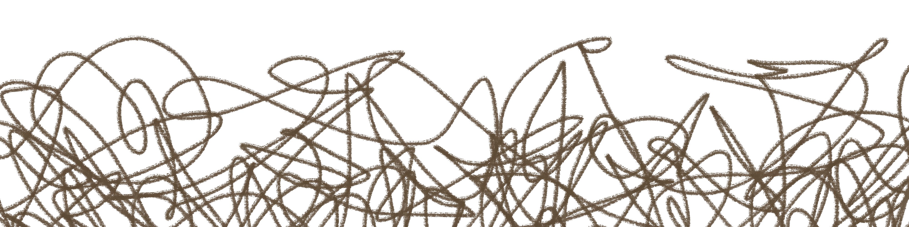

Egyre több olyan dolog marad ki vagy tolódik el az életedben, amit korábban a felnőttléthez kapcsoltál. Az önállóság, a stabilitás, az elköteleződés vagy a saját otthon gondolata lassan nem a jelened része lesz, hanem valami olyasmi, ami majd egyszer talán eljön, de most még mindig nem érkezett meg.
Vége.
